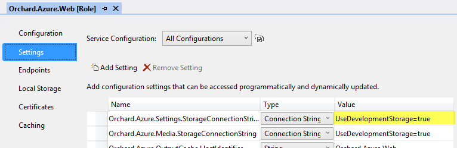

Orchard ships with providers for Microsoft Azure Blob Storage, allowing Orchard to use Microsoft Azure Blob Storage as the underlying file system implementation for shell settings (Settings.txt) and/or media storage. This topic describes how to configure and enable this functionality.
Using shell settings storage
Storing shell settings in Microsoft Azure Blob Storage is useful when running Orchard in server farm where there is no shared file system storage. Microsoft Azure Cloud Services is an example of this. For this reason, when deploying Orchard to a Microsoft Azure Cloud Service using the Orchard.Azure.sln solution, the resulting package is already preconfigured to store shell settings in Microsoft Azure Blob Storage.
The only thing you need to change before deploying is the connection string of the storage account you want to use:

- Open
Orchard.Azure.sln. - Navigate to
Orchard.Azure.CloudService, double click the roleOrchard.Azure.Webto bring up its property page, and navigate to the Settings tab. - Set the
Orchard.Azure.Settings.StorageConnectionStringsetting to be the connection string of the storage account you want to use. - Deploy the cloud service.
NOTE: It is not necessary to use this feature when running Orchard in a Microsoft Azure Web Site, because in this environment the file system is shared among instances.
It is also possible to use this feature is any other hosting environment where you have a server farm with multiple nodes but no shared file system. To do this you need to do the following:
- Add the
Orchard.Azure.Settings.StorageConnectionStringsetting in the<appSettings>element of yourWeb.configfile and set it to the connection string of the storage account you want to use. - Configure Autofac to load the
AzureBlobShellSettingsManagerimplementation in yourConfig\Host.configfile.
Here's an example Config\Host.config configuration:
<autofac defaultAssembly="Orchard.Framework">
<components>
<!-- Configure Orchard to store shell settings in Microsoft Azure Blob Storage. -->
<component instance-scope="single-instance" type="Orchard.FileSystems.Media.ConfigurationMimeTypeProvider, Orchard.Framework" service="Orchard.FileSystems.Media.IMimeTypeProvider"></component>
<component instance-scope="single-instance" type="Orchard.Azure.Services.Environment.Configuration.AzureBlobShellSettingsManager, Orchard.Azure" service="Orchard.Environment.Configuration.IShellSettingsManager"></component>
</components>
</autofac>
Using Microsoft Azure Media Storage
The Microsoft Azure Media Storage feature in the Orchard.Azure module configures Orchard to use Microsoft Azure Blob Storage is the underlying file system implementation for storing media:
Orchard.Azure:
Name: Microsoft Azure Media Storage
Description: Activates an Orchard media storage provider that targets Microsoft Azure Blob Storage.
Category: Hosting
There are two main reasons to use this feature:
- Running Orchard in a server farm configuration. Without using some form of shared storage, media content will become out of sync between the nodes in your farm as users add or remove media files.
- Offloading media requests from the Orchard web server. When Microsoft Azure Media Storage is enabled all end user requests for media content are made directly to the public blob storage endpoint.
Enabling for Microsoft Azure Cloud Services
Before the feature can be enabled you must configure the connection string to the storage account you want to use. When running Orchard in a Microsoft Azure Cloud Service this can be done either before deploying (in the cloud service project) or after deploying (in the Microsoft Azure management portal).
To configure the connection string before deploying:
- Open
Orchard.Azure.sln. - Navigate to
Orchard.Azure.CloudService, double click the roleOrchard.Azure.Webto bring up its property page, and navigate to the Settings tab. - Set the
Orchard.Azure.Media.StorageConnectionStringsetting to be the connection string of the storage account in which you want to store media content. - Deploy the cloud service.
To configure the connection string after deploying:
- Deploy the cloud service.
- In the management portal, navigate to your cloud service and select the Configure tab.
- Under
Orchard.Azure.Weblocate the settingOrchard.Azure.Media.StorageConnectionString. - Set it to be the connection string of the storage account in which you want to store media content.
- Click Save.
You can now enable the feature Microsoft Azure Media Storage in the admin dashboard.
NOTE: For multi-tenancy scenarios the
Orchard.Azure.Media.StorageConnectionStringsetting can optionally be prefixed with a tenant name.
Enabling for Microsoft Azure Web Sites
Before the feature can be enabled you must configure the connection string to the storage account you want to use. When running Orchard in a Microsoft Azure Web Site this can be done either before deploying (in Web.config) or after deploying (in the Microsoft Azure management portal).
To configure the connection string before deploying:
- Open
Orchard.sln. - Navigate to
Orchard.Weband open theWeb.configfile. - In the
<appSettings>element add a setting namedOrchard.Azure.Media.StorageConnectionStringand set its value to be the connection string of the storage account in which you want to store media content (see example below). - Deploy the web site.
Here's an example configuration:
<appSettings>
...
<add key="Orchard.Azure.Media.StorageConnectionString" value="[storageConnectionString]"/>
</appSettings>
The storage connections string will look something like the following:
DefaultEndpointsProtocol=http;AccountName=myAccount;AccountKey=myKey;
*You can get the account name and key from the Microsoft Azure management portal
that you used to create your storage or ask you dev ops admin to provide them for you.
To configure the connection string after deploying:
- Deploy the web site.
- In the management portal, navigate to your web site and select the Configure tab.
- Under App settings add a setting named
Orchard.Azure.Media.StorageConnectionStringand set its value to be the connection string of the storage account in which you want to store media content. - Click Save.
You can now enable the feature Microsoft Azure Media Storage in the admin dashboard.
NOTE: For multi-tenancy scenarios the
Orchard.Azure.Media.StorageConnectionStringsetting can optionally be prefixed with a tenant name.
Enabling for any other hosting
To enable the feature when running Orchard in any other hosting environment, use the Web.config method described above. Once the connection string has been added to the <appSettings> element, can enable the feature Microsoft Azure Media Storage in the admin dashboard.
Using a custom domain name for blob storage
Microsoft Azure Blob Storage allows the use of your own custom domain instead of the default endpoint hostname [mystorageaccount].blob.core.windows.net.
However, registering and configuring a custom domain in your storage account is not enough to make Orchard use it. Unless you also reconfigure your storage connection string to take advantage of your custom domain, Orchard will continue to generate public URLs for the media files stored in Microsoft Azure Blob Storage based on the default [mystorageaccount].blob.core.windows.net hostname.
To ensure the public URLs for your media files contain your custom domain name, modify your storage account connection string accordingly. See the topic Configuring Connection Strings in the Microsoft Azure Storage documentation for details.
Here's an example connection string using a custom domain name:
BlobEndpoint=http://blobs.mycustomdomain.com;AccountName=mystorageaccount;AccountKey=KauG3A5f...An3QlW5dA==
Multi-tenancy configuration
For multi-tenancy scenarios each setting can optionally be prefixed with a tenant name followed by colon, such as SomeTenant:Orchard.Azure.Media.StorageConnectionString. Whenever the media storage provider reads configuration settings it will always first look for a setting specific for the current tenant, and if no such setting exists, fallback to the default non-prefixed setting.
Here's an example Azure Web Site configuration with two tenants, both using Microsoft Azure Blob Storage is the underlying file system implementation for storing media, but each using its own separate storage account:
<appSettings>
<!-- Setting for Tenant1 -->
<add key="Tenant1:Orchard.Azure.Media.StorageConnectionString" value="[storageConnectionString1]" />
<!-- Setting for Tenant2 -->
<add key="Tenant2:Orchard.Azure.Media.StorageConnectionString" value="[storageConnectionString2]" />
</appSettings>